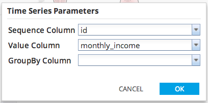
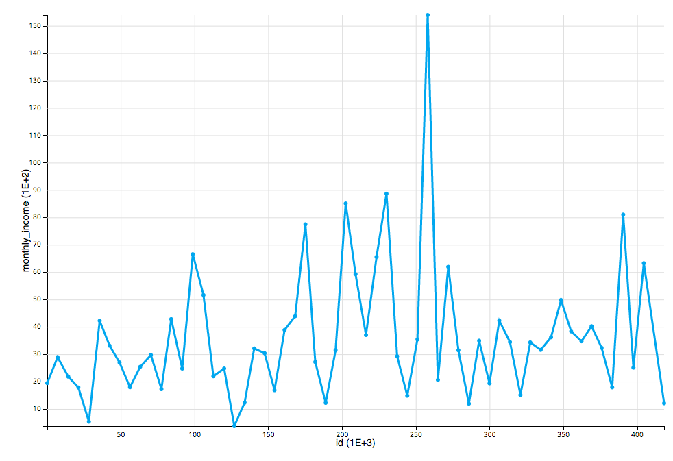

Time Series Chart
Use the Time Series Chart to visualize time series data.
- Database operators must output a table/view for Time Series Chart to be enabled.
- Time Series Chart is accessible from the Explore menu of the operator toolbar or by right-clicking an appropriate operator.

Sequence Column corresponds to X-axis.
Value Column corresponds to Y-axis.
